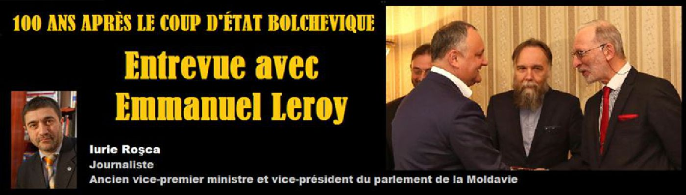
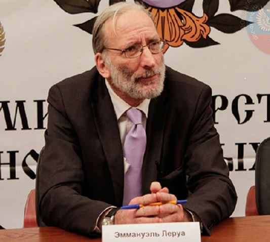
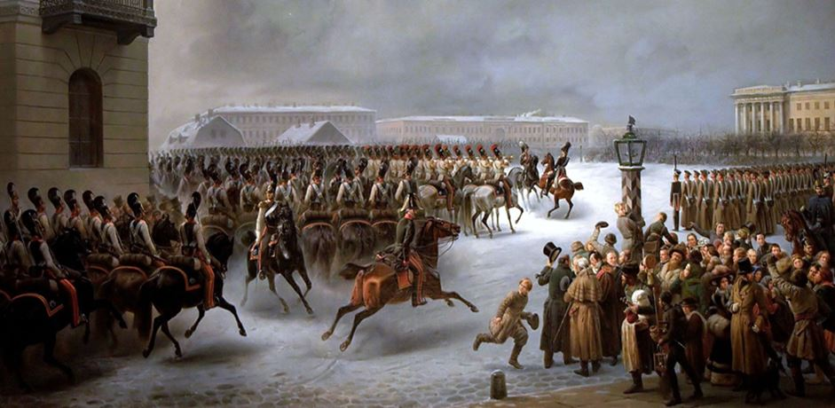
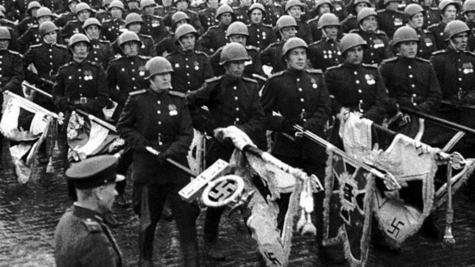
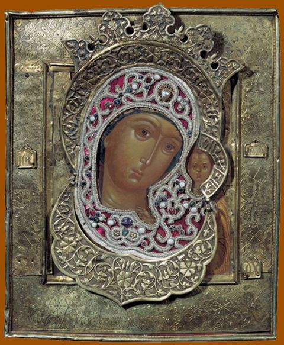

100 ans après le coup d’État bolchevique : entrevue avec Emmanuel Leroy
par Iurie ROŞCA

Progressivement, la Russie prend conscience qu’elle est le dernier rempart dans la lutte mortelle contre les valeurs morbides de l’Occident.
À l'occasion du centenaire de la Révolution d'Octobre 1917, nous avons l'intention de poser la même série de questions aux personnalités de la Moldavie, la Roumanie, la Russie et les pays occidentaux. Ces entretiens ont pour but de représenter une modeste contribution à la réévaluation des événements qui ont marqué le XXe siècle. Bien que 100 ans se soient écoulés, dans la conscience du public de l’espace ex-communiste et du monde entier, il y a encore beaucoup de préjugés sur les causes profondes de ce bouleversement majeur, mais aussi sur la façon dont la «révolution prolétarienne» est traitée par l'élite politique, le milieu universitaire et la hiérarchie de l'église. Trouver des réponses appropriées à certaines questions d'une telle complexité : cela nous semble absolument vital.
Iurie Roşca : Quelles sont les origines spirituelles, intellectuelles et idéologiques de la Révolution d'Octobre
Emmanuel Leroy : C’est une vaste question qui mériterait plus que quelques lignes pour commencer à cerner le sujet. Sur les origines spirituelles, sauf à considérer les loges maçonniques comme source spirituelle et alors comme d’essence spécifiquement anti-chrétienne, il me semble difficile de parler de spiritualité, ou alors inversée.
En effet, ces loges ont entamé leur travail de sape en Russie à travers les milieux aristocratiques et bourgeois dès le XVIIIème mais surtout au XIXème siècle, et il est probable, bien que je ne sois pas un spécialiste de cette question, que le mouvement décabriste ait été largement influencé par les sectes maçonniques.
La Révolution d’Octobre selon moi, s’inscrivait dans un vaste plan de mise à mort des vieilles dynasties monarchiques chrétiennes du continent (Hohenzollern, Habsbourg, Romanov) et ce plan a parfaitement fonctionné.
En ce qui concerne les racines profondes de la Révolution qui a renversé le tsarisme, il faut chercher de mon point de vue dans ce qui est la seule matrice de toutes les révolutions idéologiques ayant abouti à de véritables inversions radicales de polarité, à savoir la Haute finance anglo-saxonne. C’est elle, et elle seule, qui est à la base de la plupart des guerres européennes depuis le XVIème siècle et avec un seul but dont elle se cache à peine : la domination du monde. Cette oligarchie anglo-saxonne s’est focalisée au fil des siècles sur le développement continu de sa richesse selon l’adage bien connu de l’un de ses fondateurs, Walter Raleigh : « Qui tient la mer tient le commerce du monde ; qui tient le commerce tient la richesse ; qui tient la richesse du monde tient le monde lui-même ». Pour parvenir à ses fins cette oligarchie a mis en place un système de contrôle des élites par le biais de sociétés secrètes qui fonctionnent comme des instruments de création et de diffusion de l’idéologie. C’est dans les loges anglaises qu’a été définie la politique de terreur des organisations anarchistes au XIXème siècle, prélude aux révolutions qui ensanglantèrent l’Europe dans la première moitié du XIXème siècle et à laquelle la Russie fut aussi confrontée.
I.R. : Pourquoi ce coup d'État s'est-il produit spécifiquement en Russie et dans quelle mesure est-ce un « projet importé »?
E.L. : Initialement, la révolution marxiste n’était pas conçue pour la Russie, pays où l’industrialisation était encore relativement faible au début du XXème siècle. Karl Marx lui-même pensait que ses idées étaient mieux adaptées à un pays comme l’Allemagne où la classe ouvrière était nettement plus développée et largement influencée par le socialisme qu’elle ne l’était en Russie. Les raisons pour lesquelles l’Empire russe est tombé résultent à mon avis de deux volontés distinctes qui ont œuvré de concert pour abattre la dynastie des Romanov.
La première, nous l’avons vu, est la volonté de l’oligarchie anglo-saxonne de faire tomber les monarchies européennes, et elle s’est appuyée pour cela sur les grandes banques étatsuniennes comme en témoigne cet extrait d’une lettre de William Lawrence Saunders, vice-président de la Réserve fédérale de New York au président des États-Unis Woodrow Wilson le 17 Octobre 1918 :
« La forme de gouvernement soviétique a toute ma sympathie comme étant ce qui convient le mieux au peuple russe... » .
C’est cette source anglo-saxonne (Schroeder, Warburg, Rockefeller, Morgan…) qui a assuré le financement de la branche trotskyste de la Révolution de 1917.
Pour bien comprendre que cette Révolution de 1917 n’était pas un accident mais résultait bien d’une politique volontariste suivie depuis longtemps, il ne faut pas oublier que la guerre russo-japonaise de 1905 fut attisée par les Anglo-Saxons et que les mêmes banques contribuèrent aussi à financer la guerre du Mikado contre le Tsar, et toujours pour les mêmes raisons.
La deuxième cause directe de cette révolution, beaucoup plus pragmatique, tient à la nécessité impérative pour l’Allemagne de mettre fin à la guerre sur le front oriental. Lénine était donc un agent de l’Allemagne, financé par elle (et par la banque Warburg qui avait également des intérêts en Allemagne), et avait pour objectif de créer le chaos en Russie dans le but de l’affaiblir et en cas de prise du pouvoir de signer la paix avec Berlin, ce qui fut fait après la prise du pouvoir par les bolcheviques avec le traité de Brest-Litovsk.
Donc pour résumer, la Révolution de 1917 n’était pas une révolution russe, mais une révolution en Russie, opérée en même temps par un ennemi séculaire et absolu, l’oligarchie anglo-saxonne et un ennemi circonstanciel, l’impérialisme allemand.
I.R. : Le régime soviétique a produit une idéologie spécifique qui est aussi nommée la religion de la civilisation soviétique. Quelles sont les causes et les caractéristiques de la sovietolatrie? Comment expliqueriez-vous le fait que le virus communiste persiste encore en Russie et dans les anciens pays socialistes, même après plus d'un quart de siècle?
E.L. : Pour répondre à cette question, il est nécessaire de bien comprendre qu’il y a eu une rupture dans la révolution bolchevique avec l’arrivée au pouvoir de Staline. Pour mieux saisir ce qui s’est passé en URSS depuis la mort de Lénine et jusqu’à la disparition (probablement non naturelle) du petit père des peuples en 1953, rien de mieux que cette vieille blague soviétique : « Quelle différence y-a-t-il entre Moïse et Staline ? Eh bien, Moïse a fait sortir les Hébreux d’Égypte et Staline lui, les a fait sortir du Comité Central ! ».
D’une certaine façon, on peut effectivement faire une lecture du stalinisme comme d’une praxis ayant visé à déjudaïser la révolution bolchevique.
Par ailleurs, il est indéniable que c’est sous Staline que la Russie a connu son développement géopolitique maximal. Après sa victoire dans la Grande Guerre patriotique, jamais dans son histoire la Russie n’avait connu une telle gloire. Je crois qu’une des images fondatrices du mythe attaché à la personne de Staline est celle des soldats de l’Armée Rouge jetant les aigles nazies au pied du Kremlin au lendemain de la victoire.
Sur un autre plan, jusqu’à l’arrivée de Brejnev, le système de planification collectiviste s’il n’était pas très efficient n’était pas non plus le système chaotique et ubuesque qui fut mis en place durant les années 70. La gratuité totale du système de santé et de l’éducation, le faible coût de l’énergie et des aliments de première nécessité faisait du régime soviétique un système certes peu dynamique et peu attirant mais parfaitement supportable pour peu que l’on s’abstienne de critiquer le pouvoir en place. En comparaison avec le turbo-libéralisme mis en place sous le règne de Eltsine et de ses amis Anglo-Saxons, et où beaucoup de Russes perdirent le peu qu’ils avaient, on peut comprendre qu’un certain nombre d’entre eux regardent le passé soviétique avec une certaine nostalgie.
Cette observation que l’on fait pour la Russie est la même que celle que l’on peut faire pour les autres pays du Pacte de Varsovie, où des franges importantes de populations de l’ex-COMECON ont constaté depuis 1991 un abaissement certain de leur niveau de vie par rapport au régime politique antérieur.
I.R. : Ceux qui critiquent l'expérience soviétique fonctionnent souvent avec le système de référence de la démocratie occidentale pour aborder les effets politiques et économiques de cette période. Pourquoi les aspects du religieux, spirituel, métaphysique restent la plupart du temps au second plan?
E.L. : Parce que le Système, l’oligarchie financière, c’est-à-dire le véritable pouvoir, joue de l’antagonisme artificiel entre des idéologies apparemment opposées (marxisme/capitalisme, libéralisme/fascisme, gauche/droite, collectivisme/libéralisme) pour mieux faire avancer ses pions. En créant de fausses alternatives et en jouant sur l’affrontement provoqué entre deux conceptions du monde apparemment opposées mais en fait complices ou manipulées, le Système poursuit sa mission d’effacement de la religion, des traditions, des peuples et des cultures et cela siècle après siècle afin de parvenir à son but final qui est ce qu’il appelle lui-même la Gouvernance mondiale.
L’intérêt pour lui est que, quel que soit le vainqueur, son idéologie profondément matérialiste et anti-spirituelle aura progressé. C’est pourquoi la seule façon efficace de s’opposer au Système est de sortir de sa logique dialectique, hégélienne et en fin de compte marxiste, et de lui opposer une vision du monde résolument chrétienne, qu’elle soit orthodoxe ou catholique, à la condition expresse bien sûr, que le catholicisme revienne sur la supercherie de Vatican II.
Quant à la question de savoir pourquoi les aspects religieux, spirituel, métaphysique restent la plupart du temps au second plan, c’est que le Système sait parfaitement que c’est là que réside son ultime adversaire et qu’il a compris depuis longtemps que la meilleure façon de tuer une idée est de faire comme si elle n’existait pas. Voilà pourquoi il est très encourageant de voir l’orthodoxie renaître aujourd’hui sur ses terres traditionnelles et voilà pourquoi le Système, véritable manifestation maléfique, lui voue une haine totale.
I.R. : Aujourd'hui, le libéralisme et le communisme sont considérés comme deux idéologies totalement différentes. Cependant, en les examinant de plus près, nous pouvons identifier une série de coïncidences et de complémentarités frappantes. Comment décririez-vous les différences et les similitudes entre ces théories politiques ?
E.L. : Il n’est pas aisé de répondre à cette question tant il existe de variétés entre les différents stades de libéralisme et de communisme. Quels rapports entre l’Angleterre victorienne décrite par Dickens et celle de Margaret Thatcher ? Quels rapports entre le communisme des Khmers rouges et celui de Brejnev ?
Les différences résident dans l’apparence. D’un premier abord, le libéralisme semble promouvoir la liberté individuelle et le libre-arbitre alors que le communisme promeut une conscience de classe en opposant la bourgeoisie au prolétariat. En ce sens, le marxisme comme les idéologies fasciste et nazie étaient des idéologies opérant sur des masses unies au sein d’un parti unique dans une perspective de parousie libératrice (État racial épuré ou société sans classe avec abolition de l’État).
Mais quand on observe l’évolution aboutie d’une société libérale, telle que nous la connaissons aujourd’hui en Occident, on constate que derrière l’apparence de la liberté de penser, d’aller et de venir, de protester, le Système aboutit à un même enfermement, plus subtil dans la version « libérale » que dans la version communiste, mais qui est de même nature et qui vise au même but d’aliénation de la nature profonde de l’homme qui est l’élévation spirituelle. La grande force du libéralisme, en opposition apparente avec la pensée marxiste, est d’avoir su organiser un modèle de consommation absolument démentiel mais parfaitement attractif pour l’immense majorité de l’humanité.
Dans tous les cas de figure, les points de convergence du libéralisme et du communisme sont une conception matérialiste de l’Homme et un refus absolu du Divin.
I.R. : Certains chercheurs affirment que le projet communiste a trouvé une suite logique dans le projet globaliste. Dans quelle mesure cette opinion est-elle valable?
E.L. : On pourrait dire plus justement que le projet communiste était un des éléments de mise en scène du projet globaliste. Ce qu’il faut bien comprendre c’est que les oligarques Anglo-Saxons travaillent sur le temps long. Leur objectif de contrôle du monde, ce que Kipling a appelé le Grand Jeu, n’est pas à l’horizon d’une génération, ni même d’une vie entière mais il est dans leur esprit depuis leur plus jeune âge et il se déroule inexorablement depuis des siècles. Si vous regardez attentivement la carte du monde, depuis 1815, vous vous apercevrez que beaucoup de pays majeurs sont tombés dans le camp anglo-saxon (France, Allemagne, Japon, Autriche et l’ensemble des pays d’Europe centrale et orientale depuis 1991, jusqu’à l’Ukraine en 2014). Le communisme était un moyen de supprimer les élites aristocratiques, religieuses et bourgeoises et en même temps de tenter d’éradiquer définitivement la religion orthodoxe. La fin du communisme a été la tentative menée à la fois de l’intérieur et de l’extérieur, par le biais de la consommation effrénée et de l’avilissement des mœurs, d’achever la destruction complète du peuple russe. Mais fort heureusement, la Sainte Russie s’est réveillée à temps et a pu mettre un terme à l’entreprise de mort. C’est ce qui explique la haine que lui voue l’Occident aujourd’hui.
I.R. : Dans le monde ex-communiste et en Occident, la russophobie est alimentée par la confusion entretenue artificiellement entre l'Union Soviétique et la Russie (jusqu'en 1917 et après 1991), les crimes de l'ancien régime communiste étant attribués à la nation russe. C'est la même chose que si le nazisme était attribué à la nation allemande, quelque chose qui devrait causer la germanophobie. À qui profite le maintien de cette confusion et comment pourrait-il être surmonté ?
E.L. : Il s’agit d’une question difficile car elle touche à la mémoire entière d’un pays. Que le communisme ait été une idéologie abominable responsable de la disparition de millions de vie est indéniable mais en même temps, c’est sous ce régime que le nazisme a été vaincu et avec 25 millions de morts durant cette guerre atroce, il n’y a pratiquement pas une famille russe aujourd’hui qui n’ait eu un des siens tué pendant cette guerre. D’où ce regard terriblement ambigü que la Russie jette aujourd’hui sur son passé.
La meilleure chose à faire, et les Russes le font à leur rythme, c’est-à-dire lentement, c’est de revisiter leur histoire et de livrer progressivement la vérité au peuple. Mais il s’agit d’un exercice délicat, un peu comme une psychothérapie où il faut progresser doucement car le rappel de certains souvenirs est douloureux et pourrait réveiller de vieux antagonismes dont la Russie n’a pas besoin aujourd’hui.
Il est bien évident que c’est l’Occident qui profite de cette situation de confusion et que ce dernier fait tout pour entretenir celle-ci. Encore une fois, la meilleure façon pour sortir de ce piège de la culpabilisation - de même nature que le rappel des « crimes de la colonisation » qui est utilisé en France par nos mêmes ennemis et pour les mêmes raisons – est de faire sortir la vérité progressivement pour établir une vision juste de ce qu’a été le passé communiste, avec ses crimes mais aussi avec ses réussites et son passé glorieux.
I.R. : Une autre confusion fréquente en Russie et dans l'ancien espace communiste est l'attachement simultané d'une partie de la population à la fois à l'Église et à la civilisation soviétique, qui est par définition antichrétienne. Que faut-il faire pour surmonter cette approche au moins incohérente? La hiérarchie de l'église pourrait elle-même contribuer de façon substantielle au dépassement de ces déviations?
E.L. : Ce paradoxe là encore n’est qu’apparent. Pour beaucoup de Russes aujourd’hui, et notamment ceux qui votent encore pour le parti de G. Ziouganov, le passé communiste et l’Église orthodoxe participent d’une vision du monde traditionnelle où un certain nombre de valeurs (famille, mariage, bonnes mœurs...) étaient préservées, en tout cas beaucoup mieux que dans la société occidentale où ces valeurs traditionnelles sont pour ainsi dire complètement bafouées pour ne pas dire simplement inversées. Cette analyse reste valable aussi pour des pays comme la Moldavie qui sont restés dans l’orbite soviétique jusqu’en 1991.
Par ailleurs, je pense que le Parti communiste russe a muté après 1991 pour se rapprocher d’une vision traditionnelle du monde. A titre personnel, je me souviens avoir vu dans le bureau d’un responsable communiste à la Douma en 2008 un portrait de Vladimir Poutine et une icône de Saint Serge de Radonège. Dans le même esprit, n’oublions pas qu’en 1941 quand les Allemands menaçaient Moscou, Staline lui-même aurait ordonné que l’icône de la Sainte Vierge de Kazan fut installée dans un avion qui fit le tour de la ville pour la protéger.
Le Patriarcat de Moscou a sans aucun doute un rôle important à jouer pour réconcilier ces deux visions du monde et pour extirper définitivement la vision matérialiste du monde qui peut subsister dans l’idéologie communiste. La réponse à cette question réside peut-être dans le 3ème secret de Fatima... Qui sait ?
I.R. : Comment pourrait-on expliquer qu'à plus d'un quart de siècle après la chute du communisme et de l'URSS, le mausolée de Lénine soit intact et que ses restes mortels ne soient pas enterrés? Les explications qui se réfèrent à éviter d'agiter la sensibilité d'une partie des personnes âgées qui nourrissent la nostalgie ou celles de l'opportunité politique ne résistent pas à la critique. Quelles sont les causes spirituelles qui déterminent cette paralysie volitive et que devraient faire l'élite russe, l'Église, les intellectuels de pointe, l'administration gouvernementale pour sortir du filet de cette malédiction historique?
E.L. : Là encore, on touche aux mythes profonds de l’histoire russe et des millions de Soviétiques ont cru à la propagande du régime et à la bonté pour le petit peuple de Vladimir Ilitch. Une partie notable des Russes aujourd’hui croient encore à ce mythe, et ils y croient d’autant plus que la Russie sur le plan idéologique se trouve encore au milieu du fleuve. La rupture avec le communisme a bien eu lieu mais pendant 25 ans et jusqu’à aujourd’hui, la Russie a adopté l’idéologie du libre marché qui est la marque de fabrique du Système occidental.
Cependant, et depuis une date récente, disons l’été 2016, Vladimir Poutine, probablement sous l’influence de penseurs comme Alexandre Douguine ou Sergueï Glaziev à travers le Club Stolypine, a entamé une rupture franche avec l’idéologie occidentale incarnée par Alexeï Koudrine et ses amis de la 5ème colonne.
Quand la Russie aura affirmé de manière plus nette qu’elle est l’antithèse de la vision occidentale du monde et donc qu’elle participe d’une vision chrétienne du monde, à ce moment-là, le débat sera plus clair et il sera possible alors de jeter les restes de Lénine, agent de l’Occident, dans les poubelles de l’histoire. Mais il est encore un peu tôt pour cela.
I.R. : Au cours des dernières années de plus en plus de gens se tournent vers la Russie comme un bastion des valeurs traditionnelles du monde. Le courant de pensée anti-libéral en Russie pourrait-il avancer à la mesure d'une Révolution conservatrice d'envergure mondiale et quelles sont, selon vous, les chances d'une résurrection religieuse d'envergure qui pourrait supprimer le paradigme libéral dominant de la scène de l'histoire?
E.L. : Comme je l’ai évoqué tout à l’heure, la Russie est le dernier pays sur le territoire eurasiatique qui ne soit pas tombé dans les griffes de l’idéologie anglo-saxonne. C’est pourquoi la Russie est attaquée sur tous les terrains, idéologique, militaire, économique, financier, culturel...
Progressivement, la Russie prend conscience qu’elle est le dernier rempart dans la lutte mortelle contre les valeurs morbides de l’Occident.
Tout naturellement, parce que c’est sa nature profonde de peuple tellurique, le peuple russe se tourne vers les valeurs éternelles de la Tradition et c’est le rôle des intellectuels russes et eurasiatiques aujourd’hui de revivifier cette tradition en imaginant un conservatisme pour le XXIème siècle. La renaissance de ce conservatisme ne pourra se faire qu’à travers le retour du religieux et ce que j’observe dans le monde orthodoxe aujourd’hui, et pas seulement en Russie, est justement ce retour de la foi qui est la condition primordiale pour affronter les forces délétères de l’Occident libéral.
Ce combat civilisationnel sera décisif car si par malheur la Russie était vaincue, je ne donne pas cher du reste de l’humanité livrée sans défense aux sectateurs de Mammon. Ce ne sont pas les Chinois qui nous sauveront des financiers de la City et de Wall Street.
Je ne dirais qu’une chose à nos amis Russes dans la perspective inéluctable de cet Armageddon, est qu’ils doivent s’appuyer sur les esprits éveillés et rebelles de l’Occident pour pouvoir l’emporter. Nous devons travailler main dans la main pour vaincre le mal. Nous connaissons bien le Diable, il vit chez nous depuis si longtemps…
I.R.
Interview d’Emmanuel Leroy réalisée par Iurie Rosca parue le 6 juillet 2017 dans la revue GEOPOLITICA.RU à l’occasion du centenaire de la révolution bolchevique
Partager cette page